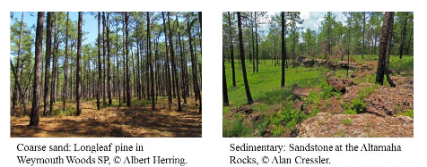
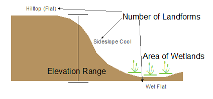
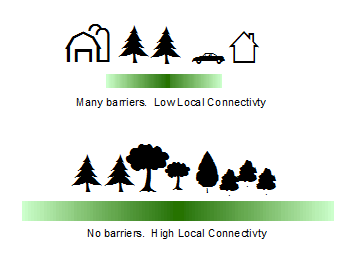
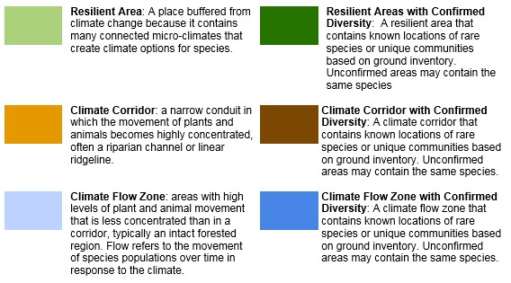
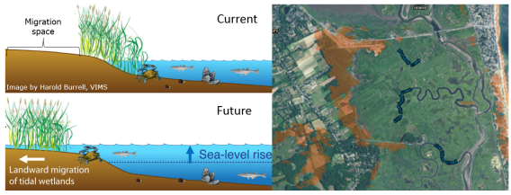

These core concepts are generalized for the completed region. For specific methods see links to individual chapters.
Resilient Site: An area of land where high microclimatic diversity and low levels of human modification provide species with connected, diverse climatic conditions they will need to persist and adapt to changing regional climates.
Geophysical Settings (a.k.a. Land Facets): Broadly defined landscape types with a similar geologic environment (e.g. similar bedrock, soils and elevation zone) that support distinctive plants, animals and natural communities. If conservation succeeds, each geophysical setting will continue to support species and communities that thrive in conditions defined by its physical properties, although the species in the future may differ from those currently present. In this study, we defined geophysical settings by mapping and classifying combinations of geology, soil and elevation. Read the methods for your region: Eastern US, Great Lakes and Tallgrass Prairie, Great Plains, Lower Mississippi and Ozarks, Rocky Mountains and Desert Southwest, Pacific Northwest, California
Natural Stronghold: a resilient site that currently supports exemplary habitats, wildlife, or rare species, and may provide refuge for these elements as the climate changes.
Two Example Settings:
|  |
Resilience Score: A site’s Resilience Score estimates its capacity to maintain species diversity and ecological function as the climate changes. It was determined by evaluating and quantifying physical characteristics that foster resilience, particularly the site’s landscape diversity and local connectedness. The score is calculated within ecoregions based on all cells of the same geophysical setting and is described on a relative basis as above or below the average. For example, cells of granite bedrock were compared with all other cells of granite bedrock, and coastal plain sands were compared with other coastal plain sands. Our goal was to identify the places most resilient to climate change for each geophysical setting within each ecoregion.
Characteristics that Foster Resilience: A resilient site is one that offers high microclimatic diversity and low levels of human modification that provide species with connected, diverse climatic conditions they will need to persist and adapt to changing regional climates. Climatic options include topographic, hydrologic and elevation diversity that provide a range of habitat types and microclimates (landscape diversity), and minimal barriers that restrict adaptive movement of species or ecosystems (local connectedness).
Landscape Diversity: Refers to the microhabitats and climatic gradients available in the immediate neighborhood surrounding any 30-m cell of land. The persistence of species in an area increases in landscapes with a wide variety of microclimates created by the topography (topo-climates), elevation and hydrology. In this study, we measure microclimates by counting the variety of small-scale landforms, measuring elevation range, and evaluating the density and configuration of wetlands in a 100-acre neighborhood around every point on the landscape. Read the methods for your region: Eastern US, Great Lakes and Tallgrass Prairie, Great Plains, Lower Mississippi and Ozarks, Rocky Mountains and Desert Southwest, Pacific Northwest, California
|  |
Local Connectedness: Refers to the degree of fragmentation and strength of barriers that create resistance to movement within a landscape. A highly connected landscape promotes resilience by allowing species to move through the landscape and find suitable microclimates where they can persist. In this study, we calculate local connectedness by measuring the amount and configuration of human-created barriers like major roads, development, energy infrastructure, and industrial farming and forestry land. Read the methods for your region: Eastern US, Great Lakes and Tallgrass Prairie, Great Plains, Lower Mississippi and Ozarks, Rocky Mountains and Desert Southwest, Pacific Northwest, California
|  |
These core concepts are generalized for the completed region. For specific methods see links to individual region reports.
Resilient and Connected Networks:
|  |
Resilient Site: An area of land where high microclimatic diversity and low levels of human modification provide species with connected, diverse climatic conditions they will need to persist and adapt to changing regional climates.
Connectivity and Climate Flow: Climate flow refers to the gradual movement of populations in response to changes in the climate. Over time, climate flow results in range shifts and the formation of novel communities. We measured climate flow using a continuous wall-to-wall model of landscape permeability based on anthropogenic resistance (resistance to movement caused by human modification) and climatic gradients (upslope, northward and riparian). On the maps, brown indicates areas with low permeability where movement is blocked. Medium blue indicates areas of high permeability and moderate flow; often highly natural settings were species movements are diffuse. Dark blue indicates areas of highly concentrated flow where movements will accumulate or be channeled. Read the methods for your region: Eastern US, Great Lakes and Tallgrass Prairie, Great Plains, Lower Mississippi and Ozarks, Rocky Mountains and Desert Southwest, Pacific Northwest, California
Connectivity and Climate Flow - Categorized: This map classifies climate flow groups based on the amount and concentration of flow. Each flow type suggests a different conservation strategy.
Read the methods for your region: Eastern US, Great Lakes and Tallgrass Prairie, Great Plains, Lower Mississippi and Ozarks, Rocky Mountains and Desert Southwest, Pacific Northwest, California
Recognized Biodiversity Value: The Conserving Nature’s Stage focus on abiotic drivers of biodiversity is meant to complement, not replace, biodiversity-based conservation priorities. In this map, we assembled information on places recognized for their biodiversity value (rare species, intact habitat, or exemplary natural communities) in separate studies. These include the results of 67 ecoregional assessments completed by The Nature Conservancy between 1999 and 2009, which identified sites representing multiple-viable examples of rare species and natural communities (Groves 2003). Additionally, we reviewed the results of 48 state wildlife action plans, and integrated information from 35 of them, to create maps of conservation opportunity areas for species of greatest conservation need. We also include recent information from the Natural Heritage Network (and other sources) on high quality species and community occurrences, and protected land managed for biodiversity and natural processes (GAP 1). This assessment ensures that the network encompasses the footprint of current biodiversity areas while integrating them with representative abiotic features which underpin that biodiversity, ensuring that networks of resilient sites are distributed across all abiotic ‘stages’ needed to conserve future biodiversity. Read the methods for your region: Eastern US, Great Lakes and Tallgrass Prairie, Great Plains, Lower Mississippi and Ozarks, Rocky Mountains and Desert Southwest, Pacific Northwest, California. Additional information and data sources are available here.
Site Resilience is the ability of a site to support biological diversity and ecological functions even as it changes in response to climate change and sea level rise (Anderson et al. 2016). We expect coastal sites to change dramatically over the next century. Many of our existing marshes are already converting to open water and new tidal habitats are forming or migrating into adjacent low lands where suitable space is available to accommodate them. Identifying places where conservation can succeed, and restoration actions could help sites adapt to change, is a necessary step in sustaining the diversity and functions of coastal habitats.
To identify resilient sites, we evaluated three components of a coastal site: tidal complexes (interconnected tidal habitats such as salt marsh, tidal flat, and brackish marsh), the adjacent migration space (suitable low-lying areas that could accommodate future tidal habitats), and the buffer area (natural and agricultural lands surrounding a site).
For each site, we assessed its physical properties for characteristics that would allow for habitat migration: size of migration space, number of tidal zones, amount of shared edge, etc. We also assessed condition characteristics that would facilitate migration: absence of barriers, adequate sediment supply, suitable water quality, etc. We combined the normalized scores for the physical and condition factors to calculate an index of site resilience.
To account for uncertainty, we calculated the resilience scores for six sea level rise scenarios (1 to 6 ft., in 1-ft. increments), assessed the trend in migration space size over time, and evaluated the physical and condition characteristics of the surrounding buffer area. The final scores are given for the 6’ sea level rise scenario as these are the most robust sites for long-term resilience.
Final scores indicate the relative resilience of the site in comparison to all other sites within its respective Coastal Shoreline Region. Scores indicate the standard deviations above or below the average score (0) for the Shoreline Region. For example, a score of 1.5 SD means the site scores 1.5 standard deviations above the average score for the Shoreline Region. In other words, the site scores higher than 69% of the other sites in its Shoreline Region.
Migration space is the area of adjacent low-lying land that is potentially suitable for supporting tidal habitats in the future as sea levels rise, and into which the current habitats could migrate. The left image illustrates how current tidal marsh is expected to move into its migration space, while the existing marsh is lost to inundation. The image on the right shows the current marsh and migration space (orange) for a section of Great Marsh, MA.
|  |
To learn more about the methods and results, access the final report here.
Citations:
Anderson, M.G., Barnett, A., Clark, M., Prince, J., Olivero Sheldon, A. and Vickery B. 2016. Resilient and Connected Landscapes for Terrestrial Conservation. The Nature Conservancy, Eastern Conservation Science, Eastern Regional Office. Boston, MA. link
Anderson, M.G. and Barnett, A. 2019. Resilient Coastal Sites for Conservation in the South Atlantic US. The Nature Conservancy, Eastern Conservation Science. Boston, MA. link
Anderson, M.G. and Barnett, A. 2019. Resilient Coastal Sites for Conservation in the Gulf of Mexico. The Nature Conservancy, Eastern Conservation Science. Boston, MA.link